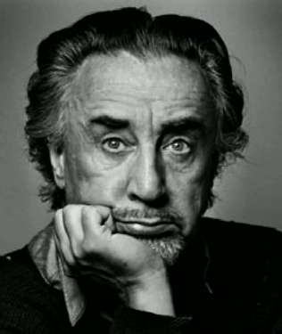

НЕ БОЯТЬСЯ СТАРОСТИ
Страх состариться — очень опасное психическое заболевание. Потому что никто от этого недуга не лечит, никто не готовит к смене жизненных сезонов и постоянно пугают: старость — это очень плохо, некрасиво и страшно.
Страх старости отравил лучшую, зрелую пору жизни бессчетному количеству людей и свел в раннюю могилу двух моих любимых писателей. Одного я в календаре уже поминал — Юкио Мисиму. Сегодня буду грустить о Ромене Гари, авторе пронзительного романа «Обещание на рассвете». (Кто не читал — немедленно приступайте).
Ромен Гари (это псевдоним, от русского «Гори!»), неустанный выдумщик и мистификатор, ценитель жизненных радостей, любитель и любимец красивых женщин не захотел стариться — остаться без радостей и красивых женщин.
В одном из последних интервью Гари сказал: «Состариться? Катастрофа! Но со мной этого не будет. Никогда… У меня договор с тем Мсье, Который Наверху. По условиям этого договора я никогда не состарюсь».
2 декабря 1980 года стареющий, шестидесятишестилетний писатель (это и мой нынешний возраст) лег на постель, надел красную шапочку, чтобы не шокировать видом крови тех, кто обнаружит тело, и прострелил себе голову.
Какая утрата! Какая ошибка! Ну почему Мсье, Который Наверху, ему не шепнул, что старость, забирая одни радости, вместо них щедро выдает другие? Зачем обрывать календарь, если в нем еще остались непрочитанные, неперевернутые страницы? Вдруг там, в конце, остается самое интересное и важное?
Не бойтесь состариться. Бойтесь страха состариться.